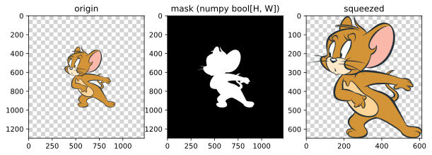
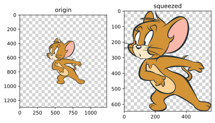

imgutils.operate.squeeze¶
- Overview:
A utility for squeezing a specified region of an image.
squeeze¶
-
imgutils.operate.squeeze.squeeze(image: Union[str, os.PathLike, bytes, bytearray, BinaryIO, PIL.Image.Image], mask: numpy.ndarray)[source]¶ Extracts the corresponding region from the original image based on the provided mask (HxW format) and crops the image to fit the mask tightly.
- Parameters:
image (ImageTyping) – The input image.
mask (np.ndarray) – The mask representing the region of interest. It should be a NumPy array with shape
(H, W).
- Raises:
ValueError – If the shape of the image and mask do not match.
- Returns:
The cropped image that fits the mask tightly.
- Return type:
Image.Image
- Examples::
>>> from PIL import Image >>> from imgutils.operate import squeeze >>> >>> origin = Image.open('jerry_with_space.png') >>> mask = ... # set your custom mask, format: bool[H, W] >>> >>> squeezed = squeeze(origin, mask)
This is the result:

squeeze_with_transparency¶
-
imgutils.operate.squeeze.squeeze_with_transparency(image: Union[str, os.PathLike, bytes, bytearray, BinaryIO, PIL.Image.Image], threshold: float = 0.7, median_filter: Optional[int] = 5)[source]¶ Automatically crops the image based on the transparency of each pixel using the
squeeze()function.- Parameters:
image (ImageTyping) – The input image.
threshold (float) – The threshold value for pixel transparency. Pixels with transparency above this threshold will be considered as part of the region of interest. Default is
0.7.median_filter (Optional[int]) – The size of the median filter kernel to apply to the transparency mask. A larger value helps reduce noise in the mask. Set to None or 0 to disable median filtering. Default is
5.
- Returns:
The cropped image based on the transparency of each pixel.
- Return type:
Image.Image
- Examples::
>>> from PIL import Image >>> from imgutils.operate import squeeze_with_transparency >>> >>> origin = Image.open('jerry_with_space.png') >>> >>> squeezed = squeeze_with_transparency(origin)
This is the result:
